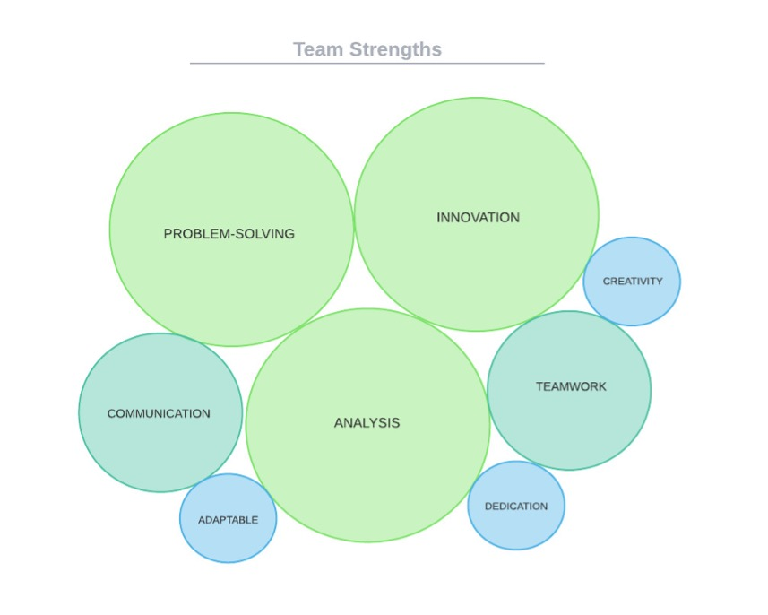
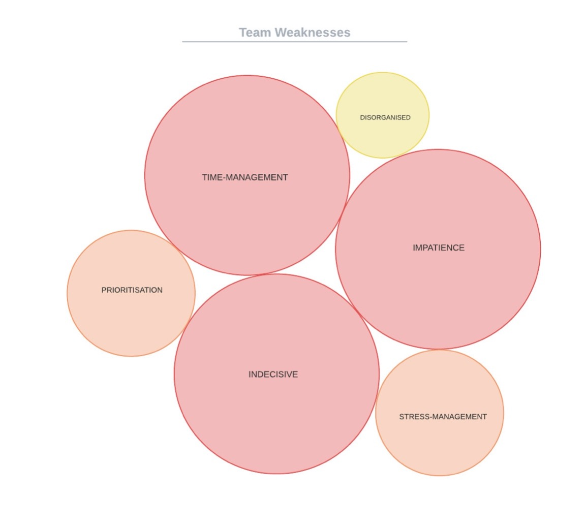

Team Name
The team name Kaleid AI, under the guise of a company profile, formed at the beginning of Assignment 2, when six like-minded students shared one vision to build their first technology project. The project chosen was a data visualisation application called Reflections that the displayed journal entries as stars in the night-sky with multiple entries linking stars into constellations.
To remain on brand the team grew the dream of Reflections into something tangible and added further enhancements to the project design. Gathering the user input data generated by Reflections enlightened a potential future state of the application by placing key entries into a database via natural language processing. Users could then search anonymous dataset correlations to uncover unidentifiable patterns unseen to the human eye mimicking the beauty and wonder of a kaleidoscope, thus Kaleid AI was a fitting team name.
Team Profile
Mark Schroeder
Personal Information
s3895337
s3895337@student.rmit.edu.au
Hobbies: Guitar, Cat.
Myer-Briggs: Debater.
Learning Style: Auditory
Creativity: Complexity
IT Interest
Computer Programming, Computer Circuits, Arduino (C++),
IT Experience
Marks leadership is a result of early his early IT experience building and programming circuits using Arduino. Mark is currently studying a Bachelor of Information Technology at RMIT and is equipped with certificates in Information Digital Media and Small Business. Marks current role as a STEM Technician exercises his curiosity every day by questioning existing technology and reinventing new processes for information and communications technology.
Ideal Job: IT Manager
Armed with a strong passion for technology Mark possesses the desire to lead a team of developers and to manage many diverse business functions across technology. Mark has excellent delegation and management skills and is always the first to raise his hand. With strong ambition Mark wishes to explore the demanding nature of project management as he welcomes any challenge that he may face.
Jack Gale
Personal Information
s3286616
23286616@student.rmit.edu.au
Hobbies: Piano, Psychology.
Myer-Briggs: Advocate.
Big Five: Openess
Creativity: Thinker
IT Interest
Data Analysis, Machine Learning, Software Design & Implementation.
IT Experience
As a Business Analyst Jack is exposed to many facets of technology and business. He is the bridge the connects technology to operations and it’s his responsibility to improve operations through technology solutions. He has achieved this by utilising Six Sigma DMAIC and Agile Software Development. As an agent of change Jack is involved in the end-to-end process of product control; this involves facilitating meetings with developers, showcasing requirements, building quality assurance test cases and training users on the front-line.
Ideal Job: Full-Stack Software Engineer
This position appeals to Jack because it’s an opportunity to express his creativity through technology by building the architecture in the back-end and influencing the design at the front-end, this means that Software Engineers challenge their critical thinking and design skills every day. There are many similarities between computer programming and Jack’s favourite hobby, playing the piano, both demonstrate a structured learning approach.
Dominic Hutchinson
Personal Information
s394438
s394438@student.rmit.edu.au
Hobbies: Writing, Gaming.
Myer-Briggs: Advocate.
Big Five: Openess
Creativity: Reflective
IT Interest
Emotive Technology, Disability Support, Computer Programming, Story Telling
IT Experience
Dom continues to exploit rapid technology solutions by expressing creative thinking to disability support. This has allowed Dom to understand emotion on a deeper level and has encouraged unique streams of thought. Studying Computer Programming at a VCE level provides Dom with a competitive advantage over his peers as he transfers this knowledge to higher education. Dom believes that technology platforms create the perfect space for users to share their narrative and build a global consciousness.
Ideal Job: Full-Stack Software Engineer
Responsible for creating, testing, and updating applications for clients, Dom is set to excel as a Software Engineer. Combining the aspects of creativity of front-end design and logic-based back-end architecture Dom will apply his innovative nature and critical thinking skills to solve technical problems.
Yousef Fares
Personal Information
s3955987
s3955987@student.rmit.edu.au
Hobbies: Food, Movies.
Myer-Briggs: Consul
Learning Style: Tactile
Creativity: Complexity
IT Interest
Artificial Intelligence, Machine Learning, Video Game Development.
IT Experience
Yousef has been exposed to many diverse cultures from Australia and the Middle East, which has allowed him to absorb the curriculum from different perspectives around the world. Yousef is a global expert who is blessed with an analytical mind and is always thinking user experience. Comfortable with Python, HTML and CSS, Yousef’s tech portfolio continues to grow with one day hoping to be proficient in Machine Learning languages.
Ideal Job: Machine Learning Engineer
Yousef’s projection of understanding Computer Science technologies paves a direct path toward becoming a Machine Learning Engineer. Yousef acknowledges the difficulty of this career path but is already investigating computer mathematics and natural processing languages to achieve his goal. Back-end developers of this calibre are the backbone of any project, and Yousef is honest and committed enough to fulfill the responsibility.
Gabriel Jones
Personal Information
s3957629
s3957629@student.rmit.edu.au
Hobbies: Hardware, Graphics.
Myer-Briggs: Entrepreneur.
Learning Style: Adaptable
Creativity: Abstract
IT Interest
Electrotechnology, Hardware, Computer Graphics, Video Game Development
IT Experience
Gabe’s in-depth knowledge of electrotechnology brands him as a hardware specialist. The electrician industry has allowed Gabe to learn the design, maintenance, installation, and repair of many forms of electrical and electronic equipment. Studying the construction of micro processers instils Gabe with a craving to understand ‘how things work’ from end-to-end. Now studying a Bachelor of Information Technology Gabe is in search of further meaning to appreciate more complicated hardware design and information systems.
Ideal Job: IT Technician
Valuing the history of complex computer systems Gabe’s next step is to become an IT Technician and he isn’t just limiting his knowledge to hardware. With insightful comprehension for software planning and development Gabe can extend his support to production requests. Additionally, technicians are confronted with a multitude of problems, therefore Gabe’s talent for deep learning will be challenged at every opportunity.
Emre Altunsu
Personal Information
s3942994
s3942994@student.rmit.edu.au
Hobbies: Tradings Cards, Charity.
Myer-Briggs: Architect.
Learning Style: Visual
Creativity: Paradox
IT Interest
NFT’s, Online Fund Raising, Online gaming
IT Experience
Emre’s aspiration studying a Bachelor of Information Technology is to graduate with the skills and knowledge to support his volunteer work at the Cancer Council Foundation. Emre has managed to lay an early foundation by beginning to explore web design and logic-based programming such as Python. These skills will setup Emre to build attractive technology to draw user attention toward charity work in an attempt to make aid more accessible among community. Emre’s vision is to make the world more accountable for their time and actions.
Ideal Job: Systems Analyst
Emre believes in lending a hand in whichever way possible, therefore the role of Systems Analyst is perfect for his character. A line of support for both operations and technology Emre will resolve requests from users and present them to the development team. It will be his responsibility to ensure the developers are building reliable product for end-users to experience on the front-line. Emre core duty is to translate the jargon of dense tech terminology and define it in a way that is understandable for the business.
Strengths & Weaknesses
Strengths
| Member | Strengths | ||
|---|---|---|---|
| Emre Altunsu | Creativity | Dedication | Disciplined |
| Jack Gale | Innovation | Problem-Solving | Creativity |
| Yousef Fares | Analytical | Team-Orientated | Self-Learning |
| Dominic Hutchinson | Innovation | Problem-Solving | Analytical |
| Gabriel Jones | Communication | Adaptability | Problem-Solving |
| Emre Altunsu | Communication | Enthusiam | Dedication |

We are skewed toward problem-solving, innovation and analysis, and the team consists of individuals who are great communicators and are team-orientated. Fortunately, these skills are favoured in the technology space and they align with the team’s evaluation (Point Jupiter, 2019). To expand further, large-scale software development cannot be achieved alone, it is important to build a team of subject-matter experts who are able to bring value to the projects journey.
One key strength missing from the group dynamic is leadership. This could be a result of our average age bracket and with minimal experience in the workforce, but leadership comes in more forms that just experience. The team may surprise each other when each member takes on different roles at different times. Leadership can look like, controlling the agenda and action items, directing project vison, or expressing resilience when the team is met with roadblocks (corporatetraining.usf.edu., n.d.). It is hard to forecast who will play which role and roles change over time, but if the team can spend moments in reflection at the end of each week, then they can assess their performance accurately and apply their self-learnings to their future work.
Weaknesses
| Member | Weaknesses | ||
|---|---|---|---|
| Emre Altunsu | Time-Management | Patience | Self-Critical |
| Jack Gale | Indecisive | Empathetic | Time-Manage |
| Yousef Fares | Lack Creativity | Indecisive | Time-Manage |
| Dominic Hutchinson | Overwhelmed | Time-Manage | Prioritisation |
| Gabriel Jones | Insensitive | Unstructured | Impatient |
| Emre Altunsu | Unclear | Stress-Manage | Forgetful |

The team is at risk of a trifecta of weaknesses; time-management, impatience, and prioritisation. It’s concerning to imagine the group succumbing to their worst traits resulting in incomplete work and not prevailing these barriers. To avoid poor time-management and prioritisation it would be beneficial to create daily schedules, consolidate similar tasks together and evade the urge to multitask (Lucid Content Team, 2017).
Another major weakness that the team expressed is indecisiveness. It is alarming to compare this to the major strength problem-solving if there are scenarios that require time pressured critical thinking and risk mitigation. During moments of indecision extroverts of the group can control the room by taking polls on conflict and mediate streams of thought to create open-lines of communication (Dike 2021).
Team Analysis
Group Processes
After careful consideration of individual reflection and group feedback, the Kalied AI team has ultimately demonstrated that they are capable in effectively engaging as a group, organising required materials, and successfully completing each component to a satisfactory standard. Each member has provided extensive input into highlighting potential strengths and weaknesses in the approach, application, and collaboration processes throughout assignment 2.
Some clear highlights include the proficient time management skills, increased productivity and meaningful dialogue embedded within designated team meetings. Various group members also established a general sense of honesty and understanding for individual/personal circumstances and ability and/or experience. Although the above components are heavily demonstrated, a significant number of changes will most certainly need to be implemented throughout each stage of assignment 3. A general consensus has been reached, with many team members drawing attention to alteration in website development components. Review of both assignment 1 and 2 leave much to be desired. Introducing website documentation, detailed commit comments/descriptions and the further use of .CSS or styling will surely bolster the team’s ability to express their content in an artistic yet expository manner.
Nevertheless, the completion of assignment 2 was an arduous and challenging task with its own set of unique difficulties. However, it provided a plethora of potential points for improvement which are important points to consider going into the various components of assignment 3 in addition to projects conducted in the near future.
Career Plans
Group members have extensively discussed their interest in various IT fields, each career path obviously varied, but share particular pre-requisites and/or level of experience. Emre Altunsu was previously interested in exploring a potential career in systems analytics. However, recently he has also considered positions in Tech Support as a secondary career option. He is looking at completing his bachelor’s degree in Information Technology prior to making any final commitments. Gabriel Jones has considered his ideal occupation as an IT Technician, highlighting great interest in the rewarding attributes and duty assignments. He is mainly drawn to the problem solving/resolution aspects of being hired for such a role. Yousef Fares in interested in seeking a career as a machine learning engineer. He has highlighted that the overall sense of achievement and real-world tangible properties have drawn him toward this career path. Although, he has underlined the position as difficult, he seeks to achieve proper educational and vocational requirements in order to fulfill his personal objective. Dominic Hutchinson wants to pursue a career in in software development. Dominic has been adamant in achieving this goal as he seeks an ‘on-the-go’ style of occupation. He was initially drawn to this role due to its creativity and overall flexibility to suit his daily schedule. Completing a Bachelor of Information Technology would propel his qualifications into achieving such a role in the future. Although currently employed in an IT role, Mark Schroeder aspires in furthering his career and achieving the role as IT Manager. He currently has multiple certificates in IT Media and Business but seeks to further this by completing his bachelor's degree in information technology. Similarly, Jack Gale seeks to further his current occupational role as a Business Analyst. He has stated on multiple occasions that a qualifying bachelor’s in information technology would improve his odds in obtaining his ideal position as a Lead Software Engineer in addition to obtaining necessary skills required for said position.
Majority of the group including: Emre, Gabriel and Dominic having no professional experience or qualifications in terms of achieving their ideal occupational positions with Jack, Mark and Yousef having either worked or are currently working in an IT based role. Each member has ultimately decided to remain on course with their ideal jobs provided in assignments 1 and 2 with potential deviation in a secondary/emergency IT role. Although each position is ultimately within the IT industry, each have specific requirements, prerequisites and guidelines with some overlap between team members. Mark and Jack ultimately have the most experience in the IT industry with multiple qualifications under their belts. Yousef is comfortable in python programming and has substantial experience in CSS and HTML. As for Emre, Gabriel and Dominic, they each require a larger level of experience, qualification, and skill as compared to others in the group. Overall, each individual within the Kalied AI team is looking to complete their Bachelor’s in information technology with the notion that it will support them in attaining their desired roles in the IT industry.
It has been reported among the group that the confidence of learning programming languages has dramatically increased, this is due to RMIT’s immersive education requiring first year studies to learn HTML, CSS and Python at a rapid pace. An element of technology intimidation exists from people who are unaware of coding practises, especially those who don’t come from a tech background with many non-tech students and employees claiming that ;
- It’s too difficult to learn
- Presuming failure because its outside school curriculum
- Beginners think it’s too late to learn
- Not within their interest
- Too expensive
After only 3 months the shackles of fear have been released for each team member. With this newfound belief it is only fitting for the group to add a stretch goal to their career progression. The stretch goal doesn’t necessarily signify a promotion from the graduation goal but suggests another area of technological expertise to explore.
| Who | Current Role | Graduation Goal | Stretch Goal |
|---|---|---|---|
| Mark Schroeder | ICT Technician | IT Manager | Solutions Architect |
| Jack Gale | Business Analyst | Software Engineer | Product Owner |
| Dominic Hutchinson | Bach of Info Tech | Full-Stack Engineer | Back-End Engineer |
| Yousef Fares | Bach of Info Tech | Machine Learning | Artificial Intelligence |
| Gabriel Jones | Electrotechnician | Hardware Technician | Computer Scientist |
| Emre Altunsu | Bach of Info Tech | Systems Analyst | Product Owner |
- Cherry, K. (2020). An Overview of the Myers-Briggs Type Indicator. [online] Verywell Mind. Available at: https://www.verywellmind.com/the-myers-briggs-type-indicator-2795583.
- Lepore, M. (n.d.). How to Improve Teamwork: The Introversion/Extroversion Variable. [online] blog.thinkherrmann.com. Available at: https://blog.thinkherrmann.com/how-to-improve-teamwork-the-introversion/extroversion-variable#:~:text=Here%20are%20some%20tips%20he [Accessed 14 Apr. 2022].
- Myersbriggs.org. (2019). The Myers & Briggs Foundation - Thinking or Feeling. [online] Available at: https://www.myersbriggs.org/my-mbti-personality-type/mbti-basics/thinking-or-feeling.htmreference3
- NERIS Analytics Limited (2015). Tactics: Judging vs. Prospecting. [online] 16personalities.com. Available at: https://www.16personalities.com/articles/tactics-judging-vs-prospecting.
- Everly, G. S., Rosenfeld, R., & Allen, R. J. (1981). The nature and treatment of the stress response : a practical guide for clinicians (1st ed. 1981.). Plenum Press. https://doi.org/10.1007/978-1-4613-3240-4
- NERIS Analytics Limited (2015). Identity: Assertive vs. Turbulent. [online] 16personalities.com. Available at: https://www.16personalities.com/articles/identity-assertive-vs-turbulent.
- Point Jupiter - Web development & UX design agency. (2019). Soft Skills for Software Developers - Ultimate Guide - Point Jupiter. [online] Available at: https://pointjupiter.com/soft-skills-software-developer-need-ultimate-guide/.
- corporatetraining.usf.edu. (n.d.). What Does a Leader Look Like? Identifying Real Leadership Qualities. [online] Available at: https://corporatetraining.usf.edu/blog/what-does-a-leader-look-like-identifying-real-leadership-qualities [Accessed 14 Apr. 2022].
- Lucid Content Team (2017). 10 Tips for Mastering Time Management at Work | Lucidchart Blog. [online] www.lucidchart.com. Available at: https://www.lucidchart.com/blog/time-management-at-work.
- Dike, M. (2021). How to Deal With Indecision When You’re an Introvert Who Overthinks. [online] IntrovertDear.com. Available at: https://introvertdear.com/news/how-to-deal-with-indecision-when-youre-an-introvert-who-overthinks/ [Accessed 14 Apr. 2022].